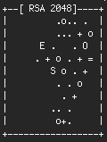

Command-line basics: one-liners, aliases and SSH keys
This merges three short posts from my old blog (Bash one-liners, text manipulation, Bash shells and aliases and Automatic SSH login, all February 2011). I have corrected a few mistakes in the originals and updated a few commands that have since changed. The corrections are listed at the end.
Text one-liners
Bash is very powerful for text manipulation, and you can save a lot of time by learning a few short commands, the so-called one-liners.
To convert a string to upper case (or lower case), use tr:
echo "lowercase" | tr "[:lower:]" "[:upper:]"
# LOWERCASETwo commands that are indispensable for any bioinformatician when checking large files are head and tail, which show the first or last N lines of a file:
head myfile.txt # the first 10 lines
head -n 5 myfile.txt # only the first 5 lines
tail -n 5 myfile.csv # the last 5 lines
tail -n +2 myfile.csv # everything from line 2 on (skips the header)Now the really useful part: you can chain these commands with a pipe.
head -n 10 myfile.txt | tail -n 5 # lines 6 to 10Quite often you need only a part of a line. Say you have the line Accuracy.mean=0.98 and you want just 0.98:
acc_mean=$(grep "Accuracy.mean" myfile.txt | awk -F= '{print $NF}')And when a line contains unwanted spaces, here is the remedy:
echo " I a m full of s p a ces " | tr -d " "
# IamfullofspacesStart-up files and aliases
Some commands are long and cumbersome to type, yet you need them several times a day. Aliases are a good remedy.
Each user has two important files in the home directory: .bash_profile and .bashrc. They are read by a login shell and a non-login shell, respectively. A login shell is the one you get when you log in; every shell you open after that is a non-login shell. Typically, commands you want to run only at login, such as displaying system or network information, go into .bash_profile, and everything else, including aliases, goes into .bashrc. To avoid repetition, end your .bash_profile by including .bashrc:
if [ -f ~/.bashrc ]; then
source ~/.bashrc
fimacOS users: Terminal opens a login shell every time, so it reads .bash_profile (or .zprofile/.zshrc if you use zsh, which is the default today).
Beginners’ note: file names that start with a dot, such as .bashrc, are hidden. You can see them with:
ls -alSay you often use ls -alh, which lists all files, including hidden ones, with their sizes in human-readable form. To have something shorter, add this line to the end of your .bashrc:
alias ll='ls -alh'From now on, typing ll gives you all the information about your files. After editing the profile files, re-open the shell (or run source ~/.bashrc) to use the aliases.
A useful maintenance alias on Debian or Ubuntu updates the whole system with one word:
alias admin='sudo apt update && sudo apt -y full-upgrade && sudo apt -y autoclean'Logging in over SSH without a password
If you log into a server over SSH several times a day, typing the password every time gets annoying. It is easy to set up key-based login. Suppose you want to allow your workstation to connect to the server. First, generate a key pair on the workstation:
ssh-keygen -t ed25519and answer the questions: where to save the key, and an optional passphrase (a passphrase is a good idea). The command prints a fingerprint and a small picture, the key’s randomart:

The image is a visual representation of the key’s fingerprint. It is meant to be easier for humans to compare and verify than a string of hexadecimal characters, such as ef:f2:5b:9c:…. They are fun, anyway.
Now the public key has to be added to the list of trusted keys on the server. The simplest way is:
ssh-copy-id user@serverThis creates ~/.ssh on the server if needed and appends your public key to ~/.ssh/authorized_keys. If ssh-copy-id is not available, the same can be done by hand:
ssh user@server mkdir -p .ssh
cat ~/.ssh/id_ed25519.pub | ssh user@server 'cat >> .ssh/authorized_keys'You should now be able to log in without typing the password. If it still asks, check the permissions on the server: ~/.ssh should be 700 and ~/.ssh/authorized_keys should be 600 (or at least not writable by others).
Corrections to the original posts
tail -n myfile.csvwas missing the number;tail +2is the obsolete form oftail -n +2.head -n 10 … | tail -n 5shows lines 6 to 10, not “5 to 10”.awk '{FS="="}…'sets the separator too late for the first line;-F=is the right way.- The
llalias was announced asls -alhbut defined asls -al; it is nowls -alh. - The
adminalias usedaptitude; it now usesapt. - The SSH key type was RSA (
ssh-keygen -t rsa);ed25519is the usual choice today, andssh-copy-idreplaces the manual steps.